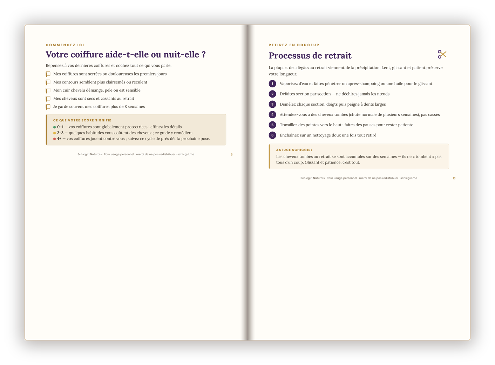
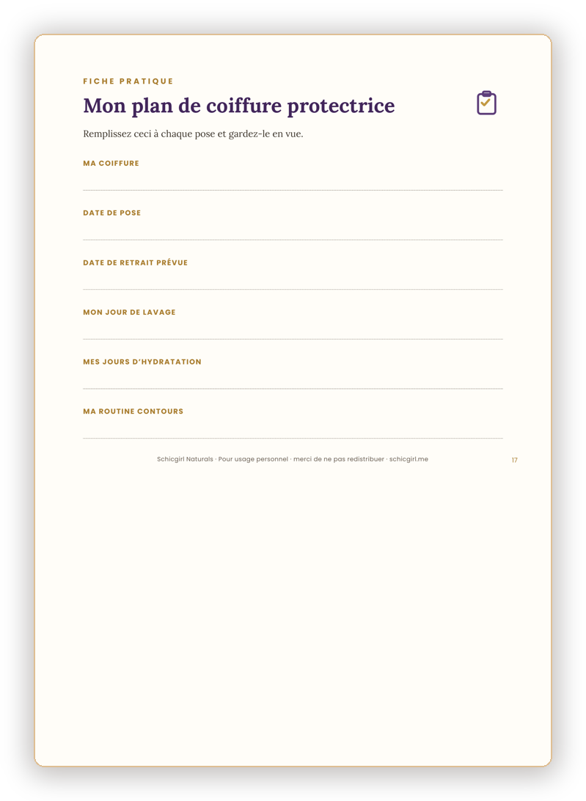

Une coiffure protectrice doit faire reposer tes cheveux — pas les laisser plus secs et cassés qu'avant.
Tu retires ta coiffure et tes cheveux sont plus secs et cassés qu'avant ? Ce n'est presque jamais la faute de la coiffure. C'est l'avant, le pendant et l'après qui décident.
REGARDE À L'INTÉRIEUR
Un aperçu de tes pages


Aperçu de vraies pages du guide
CE QUE TU VAS COMPRENDRE
Préparer tes cheveux avant la coiffure
Entretenir pendant — hydratation & cuir chevelu
Retirer et récupérer après sans casse
Protéger tes contours et tes pointes
La check-list à garder toute la durée du style
Prep your hair before the style
Maintain during — moisture & scalp
Take down and recover after without breakage
Protect your edges and ends
The check-list to keep for the whole style
CE QU'IL Y A À L'INTÉRIEUR
Le cycle complet : avant · pendant · après
Les habitudes qui comptent plus que la coiffure
Une check-list pratique + deux fiches à garder
The full cycle: before · during · after
The habits that matter more than the style
A practical check-list + two reference cards
POUR QUI ?
Pour toute femme qui porte (ou veut porter) tresses, twists ou perruques et veut en sortir avec plus de longueur, pas moins.
Paiement sécurisé · accès immédiat · à vie · PDF
Une question avant d'acheter ? Écris-moi sur Facebook 💛
QUESTIONS FRÉQUENTES
Je reçois quoi ?
Un PDF avec check-list et fiches, téléchargeable immédiatement.
Ça marche pour tresses ET perruques ?
Oui — le guide porte sur le cycle de soin, valable pour la plupart des styles.
Je débute, c'est pour moi ?
Oui, à appliquer dès ta prochaine coiffure.
Comment je paie ?
Paiement sécurisé sur Selar (carte, mobile money selon ton pays).